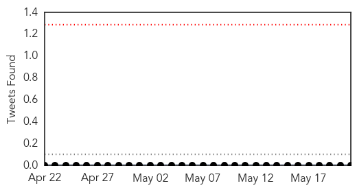

Mold/Fungal
30-Day Web Trend
0 alerts, 0 warnings

30-Day Twitter Trend
0 alerts, 0 warnings

Article Locations

Article Confidences

Top Articles:
-
No articles found for May 21, 2015
Top Tweets:
-
No tweets found for May 21, 2015
Measles
30-Day Web Trend
0 alerts, 0 warnings

30-Day Twitter Trend
0 alerts, 0 warnings

Article Locations

Article Confidences

Top Articles:
- 0.974
- Bloomberg Op-ed: How the world is wiping out killer diseases
- 0.957
- Nepal quakes: How medics race to avert a health crisis
- 0.916
- Legionnaires’ disease scare at Hervey Bay Hospital
- 0.884
- Measles case confirmed in Fairfax County, exposure advisory issued in Washington DC
- 0.626
- Medic may have unknowingly spread measles while on the job
- 0.544
- Sudan: Humanitarian Bulletin Issue 20
Top Tweets:
-
No tweets found for May 21, 2015